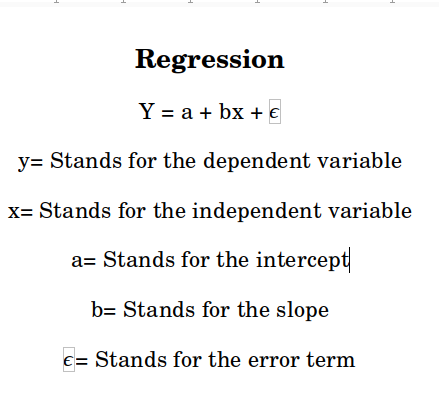

DISCRIPTIVE STATISTICS
VISUALIZATION TOOLS:-
Line chart
Simple Bar Diagram
subdivded Bar Diagram
Pie - Diagram
Histogram
measures of central tendency
measures of central tendency
measures of dispersion
measures of central tendency
Skewness and Kurtosis
Fertility Rate:-
Fertility Rates
Death Rasts:-
Death Rates
DISTRIBUTION THEORY
Binomial Distribution
Piosion Distribution
Normal Distribution
Exponential Distribution
CORRELATION ANALYSIS:
Correlation
REGRESSION ANALYSIS:
Regression
SAMPLING TECHNIQUE :-
Simple Random Sampling
SRSWOR
SRSWR
Stratified Random Sampling
Systamatic Random Sampling
Hypothesis Testing:
t-test
F-test
Chi-Square Test
OneWayANOVA
TwoWAyANOVA
REGRESSION:-
enter x value : ---
enter y value : ---
REGRESSION
